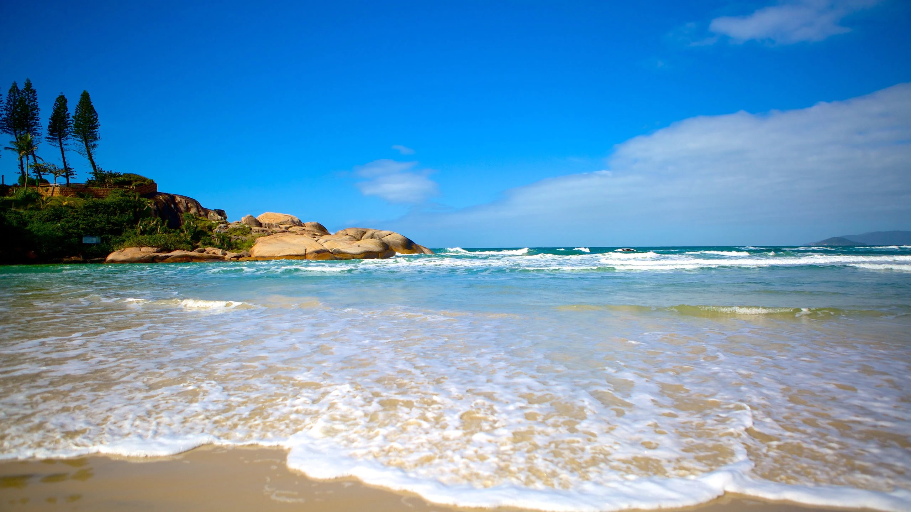

Presença do Tamar no Brasil
Nossas bases estão espalhadas por 1.100km de praias, em áreas de alimentação, desova, crescimento e descanso das tartarugas marinhas.
Nossas bases estão espalhadas por 1.100km de praias, em áreas de alimentação, desova, crescimento e descanso das tartarugas marinhas.